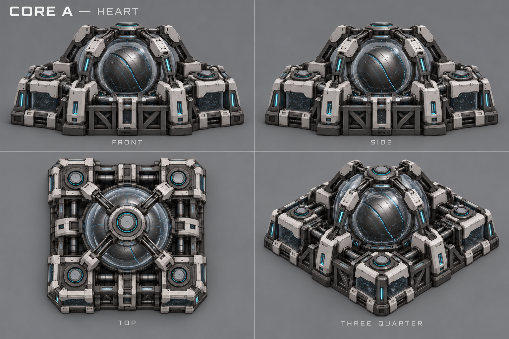
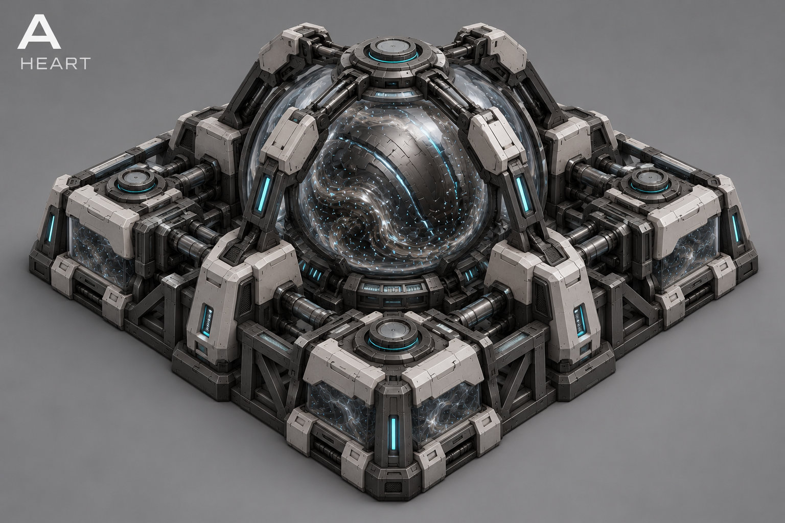
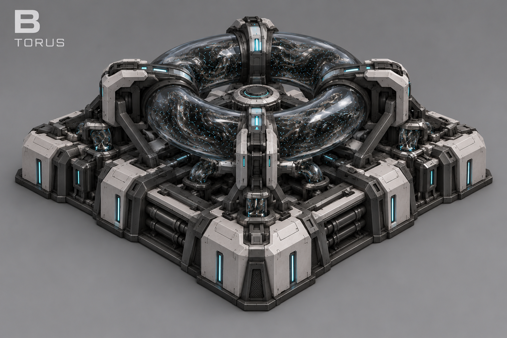
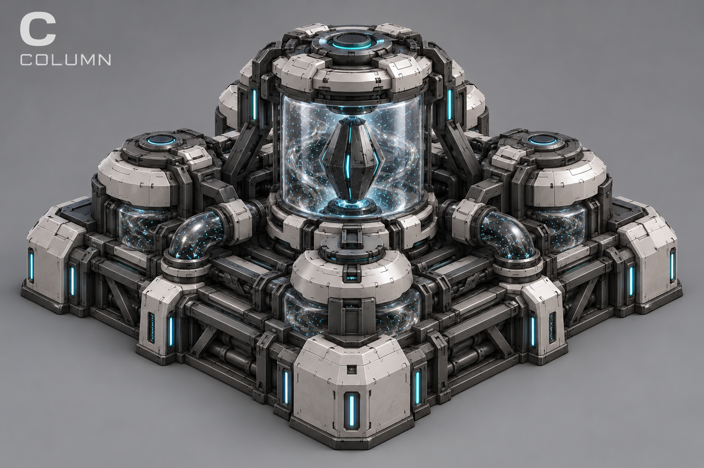
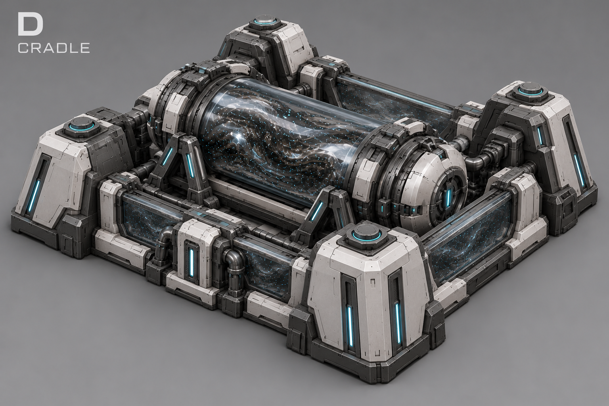
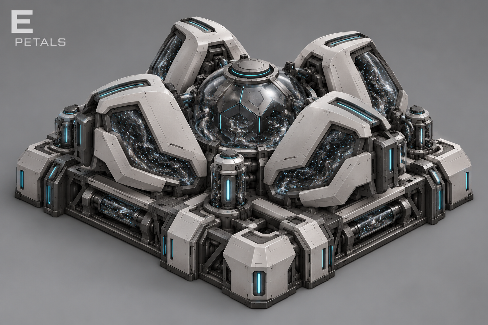
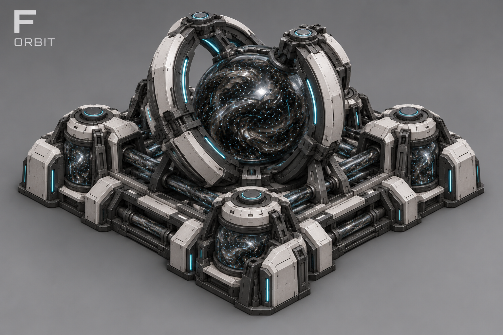

Все концептыЯдро — новое сердце базы
Шесть новых направлений. Стиль Стража и сборочного узла; в центре — физический сердечник для будущих эффектов. Выбран A — «Сердце».
Без ворот и фиксированного выхода. Функции командного центра сохраняются. Форма A утверждена; пульсация, движение нанитов и производственные импульсы — предложения для следующего этапа.
Выбран A — модельный референс
Центральная сфера, прозрачная камера, четыре опоры и угловые технологические блоки. Фронт и бок имеют наклон камеры: это референс формы, не точный чертёж. Исходный A остаётся главным ориентиром.

История поиска A–F
A — Сердце
Сфера в прозрачной камере, удерживаемая четырьмя опорами.

B — Контур
Кольцевой сердечник в открытом низком корпусе.

C — Столп
Вертикальный сердечник внутри центральной камеры.

D — Колыбель
Горизонтальная капсула в широкой открытой колыбели.

E — Лепестки
Многогранное ядро между четырьмя раскрытыми броневыми секциями.

F — Орбита
Сфера между двумя силовыми дугами.

Правила и идеи эффектов · История: прежняя Цитадель